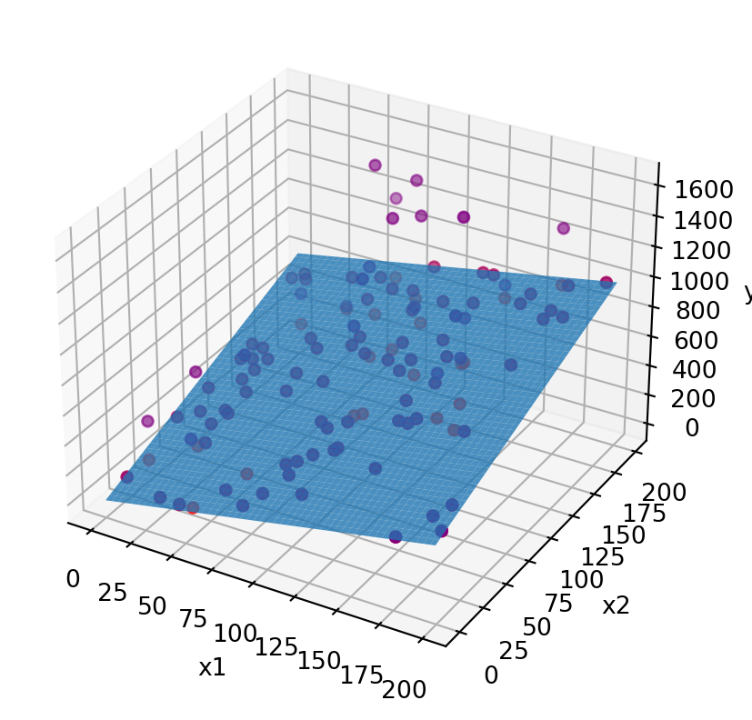

Code
import numpy as np
import matplotlib.pyplot as plt
dim = 2
N = 100
params = [2, 3]
interval = [0, 200]
outlier_fraction = 0.25
## create dataset
x = np.random.randint(interval[0], interval[1], (N, 2))
gt = x[:,0] * params[0] + x[:,1] * params[1]
# add random noise
y = gt + np.random.random(gt.shape)*0.1
# add outliers with 1000*N(0,1)
idx = np.random.randint(0, N, int(outlier_fraction * N))
y[idx] = y[idx] + np.random.rand(idx.size)*1000
# plot
xx, yy = np.meshgrid(range(interval[1]), range(interval[1]))
z_plane = xx*params[0] + yy*params[1]
# Create figure
fig = plt.figure()
ax = fig.add_subplot(111, projection='3d')
# Plot 3D plane
ax.plot_surface(xx, yy, z_plane, alpha=0.8)
# Set labels
ax.set_xlabel('x1')
ax.set_ylabel('x2')
ax.set_zlabel('y')
#and i would like to plot this point :
ax.scatter(x[:,0], x[:,1], gt, color='red')
ax.scatter(x[:,0], x[:,1], y, color='purple')
# when directly solving the linear equation X.theta = y, this is overdetermined, because there are many more equations than variables, so I'm just using the first #dim equations
# if we were doing RANSAC, the number of samples each time would also be this if we were going for the naive simple linear model
z_gt = np.linalg.solve(x[:dim, :dim],
gt[:dim])
print('z_gt=', z_gt)
z = np.linalg.solve(x.T.dot(x),
x.T.dot(y))
print('z=', z)
# plot estimated surface
# z_hat_plane = xx*z[0] + yy*z[1]
# ax.plot_surface(xx, yy, z_hat_plane, alpha=0.8)
# compute sum of squared error with z model
y_hat = x.dot(z)
for _y, _yhat in zip(y, y_hat):
print(_y, _yhat, (_y - _yhat)**2)
sse = np.sum((y - y_hat)**2)**(1/2)
print('sse=', sse)
plt.show()z_gt= [2. 3.]
z= [2.6715333 3.4231839]
553.0366554877959 634.1221847881386 6574.863061916739
581.0257073939612 729.9352564050216 22174.053786677414
706.0867243551226 839.0785985542243 17686.838602989705
436.0883220405556 538.0014400674104 10386.283625955628
400.050103945776 491.0820727130472 8286.819337645433
571.0883090483975 658.1659845190089 7582.521565365125
1016.1576347478971 290.45449888182077 526645.0414058568
415.0861508818276 482.49688585802977 4544.207190031764
431.0918303694193 564.6172218690871 17829.03017513955
571.9171882561097 151.86081678616068 176447.35521249982
1625.030696145146 819.4451511788888 648968.0702585818
857.3247650621568 700.4668776466159 24604.39684446649
575.0989066771549 699.7242464545636 15531.475314634574
1236.029957987714 827.1427208124517 167188.7727248192
544.0724355340316 649.5537394460689 11126.305474983583
551.0974787390737 661.8246862765171 12260.514489040064
386.02258012285387 449.016697441492 3968.2588167543445
967.8326087715739 825.5398683837752 20247.223967069458
344.0995120702039 402.2603549284794 3382.6836419850147
680.0934542491792 799.675737180125 14299.922390976766
771.0953554186798 928.8240111841434 24878.328849580113
369.0133982400601 426.8927804160254 3350.0228810714502
491.06650637328215 581.6786871736163 8210.567309392436
407.01354110871495 476.4836810738186 4826.100346771094
405.0795005309986 467.9709872335024 3955.339099651214
913.2904173037234 760.2458175881031 23422.64950211444
734.0823177242754 904.5176353792988 29048.197504168722
346.0286327139974 432.9694588089635 7558.707242075138
187.04060749820528 244.53131938750994 3305.1819535390364
605.8540599656659 691.2205720202217 7287.441380360613
925.0011912304478 1122.849754474483 39144.05397772899
1462.0524581657885 716.3420720318195 556083.9799880731
908.0664724415496 992.1076474477622 7062.919096424853
1381.7148549650408 805.0097843810108 332588.738437331
243.02356875663963 283.11905655485594 1607.648141776913
606.0835281413412 735.8759681745315 16846.077489769315
1488.0859227821206 831.897161662636 430583.6902195241
1040.0321091221235 719.5932116859511 102681.08699010982
81.04825096364762 104.10828641309574 531.765234929804
577.0322903240711 663.8441202145444 7536.293808932472
1310.4000479520373 713.9060565844414 355805.08173764555
677.0298749054671 820.7854275335908 20665.65891141725
203.07132585381927 233.1930868083871 907.3204830041273
1293.1066328119318 1112.1636212607627 32740.373429206513
640.0691469459211 747.4133032189017 11522.767885958061
372.1159226880901 128.2426179706155 59474.18875382222
374.04613484522866 437.6604260504208 4046.7780455389884
100.01546009358442 131.2402009567469 974.9844419716479
391.09968769320244 467.9619678275282 5907.81010744757
842.0794439497741 1027.7522558317296 34474.393072152016
770.0160671325194 912.8853431902128 20411.63004124939
865.0028430141505 1054.3860764453548 35866.00910485802
862.0189587529121 1043.9534998996346 33100.17726226846
285.0525418412088 328.70716696049124 1905.7262943050869
381.03349599929135 476.80071135054584 9171.359536133554
871.0769387421601 1064.737140570399 37504.273772154265
211.01418749486257 253.22507688112523 1781.7591827793021
288.0339030007165 364.8408498685107 5899.307087152159
694.6146219685414 234.9409252664659 211299.90743975173
429.02144941821183 510.543475841058 6645.840792087231
496.01260262632667 584.268708056371 7789.1401456791
1612.657134581335 735.1333369824792 770048.0153523175
282.0169913465148 363.8356426024841 6694.29169334592
840.0450402142692 1007.5572409176409 28060.337384486687
732.026090575937 877.3132278209464 21108.35224885019
574.0079237941256 694.2996674270283 14470.103586243986
507.0234170245728 629.9202920707332 15103.641896111578
1151.4414306465806 665.6644516873243 235979.27328678165
333.01340626231706 392.8239662428119 3577.303085180368
618.0038231617749 744.8957753508482 16101.56753035407
544.0206830066902 670.5819173788594 16017.74604580715
534.0340242942499 664.2336435059729 16951.94084287766
280.0072658355876 330.79007450724555 2578.893656582219
516.0027919197345 642.5263079898571 16008.200118746567
400.0145897474584 493.4185369278017 8724.297348868366
424.04111049913604 560.5238997902795 18627.551772690673
414.0011397892196 526.138055340339 12574.687829318867
470.05127117017446 611.4550768027749 19995.036247382242
980.078779808502 1193.3963400503656 45504.381507541104
297.0152392654102 372.7739373581254 5739.380336703175
58.07333559932181 66.96037683307553 78.97950189043885
455.0966860296654 547.6098730004028 8558.68976348261
607.0956433894627 745.9734756315759 19287.052288268533
659.0505390909971 803.7510204469841 20938.22930465434
1351.561292728924 575.3213938947555 602548.38054208
356.0328548930314 474.3646959031676 14002.424596848152
280.0640258292103 331.9583066146228 2693.016378235232
389.02644038513137 486.3186124568887 9465.766746440433
567.0867034997347 676.1875600596939 11902.996902116793
829.0323530417264 992.2796916950871 26649.69357740502
630.0786425720895 743.4014935607695 12842.068556202568
710.8548073419885 586.4421474297748 15478.509946432148
834.0399785719956 1011.2249620811233 31394.518381129867
229.02503257678134 294.79235822265423 4325.34112261029
1044.9946303233187 557.7888928781226 237369.43059951733
680.0459630009796 804.3486656096339 15451.161875815575
316.0409052134162 396.4011555796448 6457.769838922948
182.05842786176063 232.59544164573725 2553.989762201843
243.08240285681748 287.79198498436494 1998.9467340199117
677.0300131763337 809.1031064598183 17443.30196946802
sse= 2561.921775742817